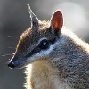

This page-turning reader needs JavaScript. Every entry is also available as plain, readable text:
List of all entries (text version)
▼ Scroll down to read the entry
▲ Scroll or click up to return to LJ Idol Topics

You’ve reached the western edge of the entries. The journal itself is one step further.
Taking you to LiveJournal…